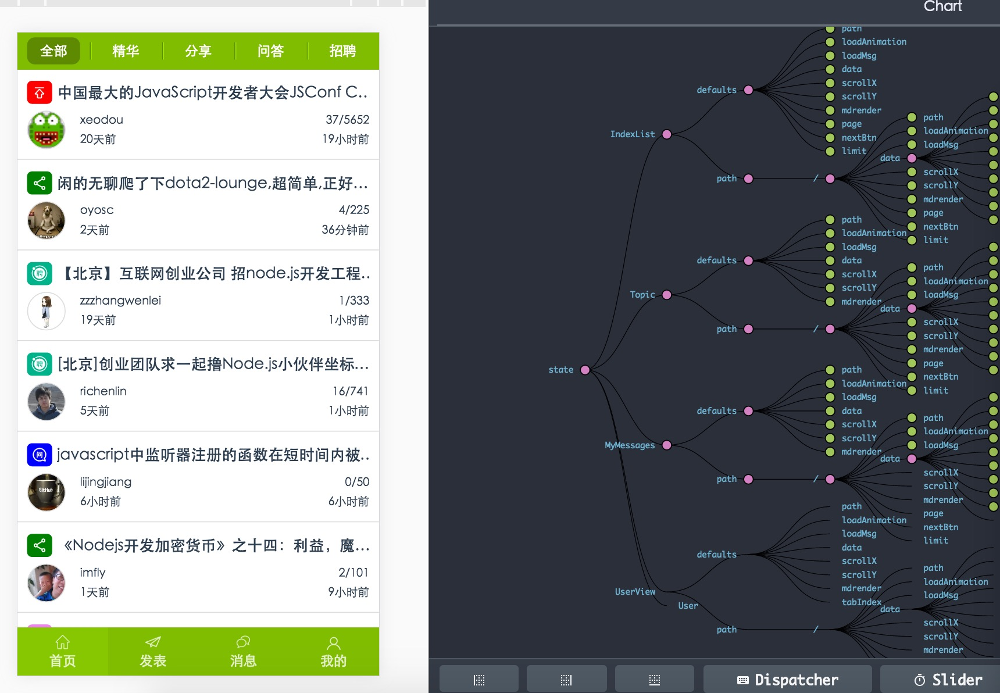
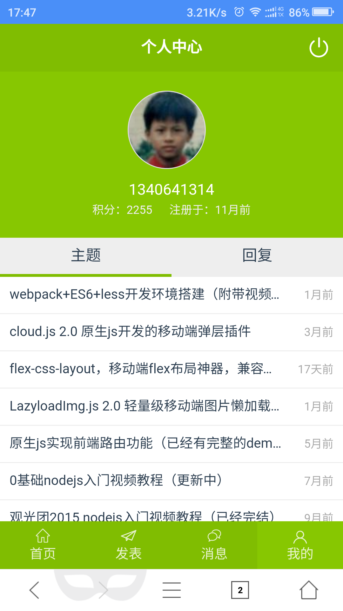
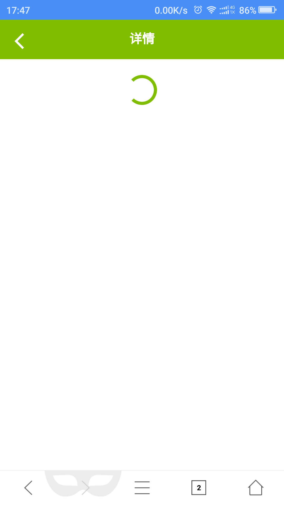
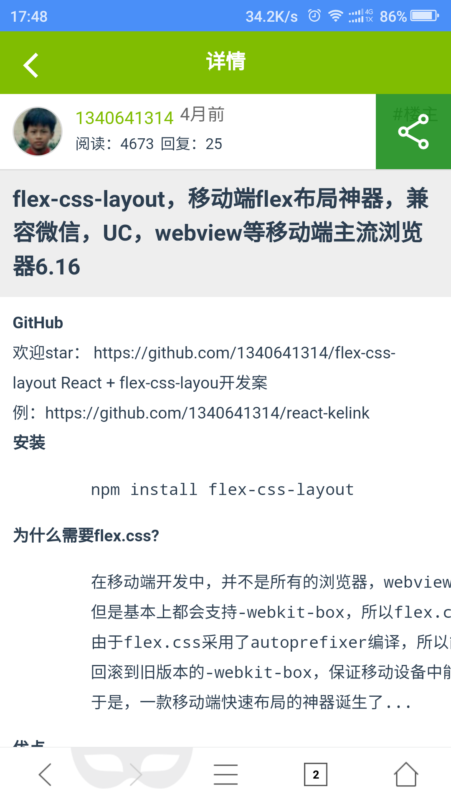
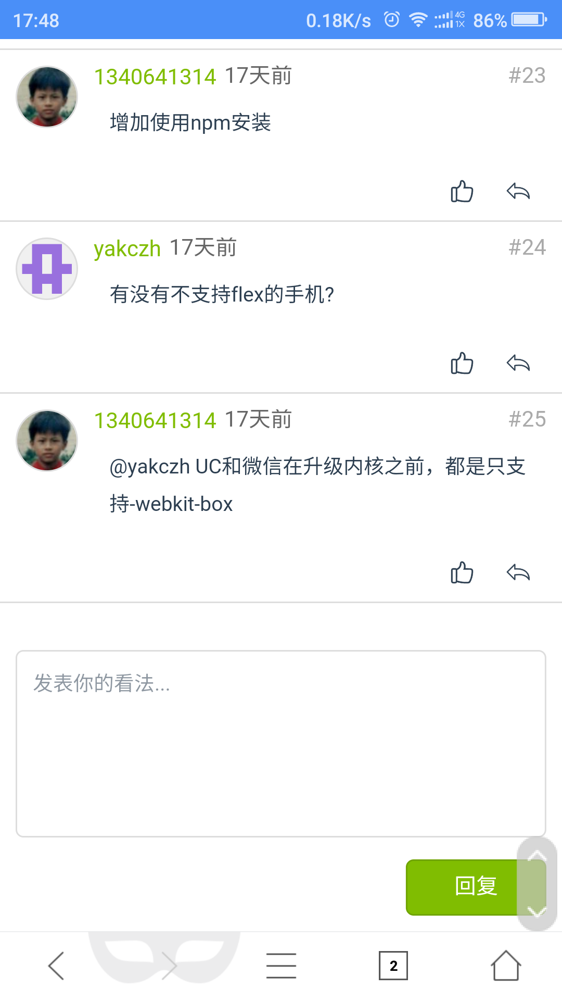
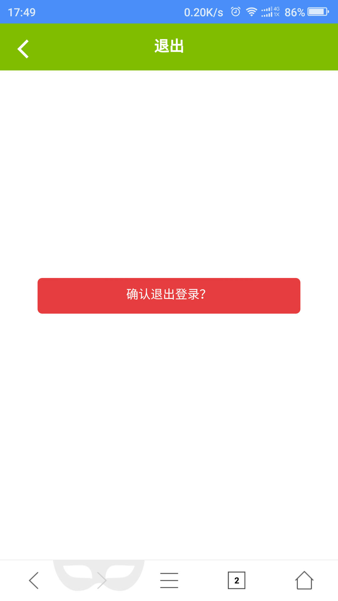
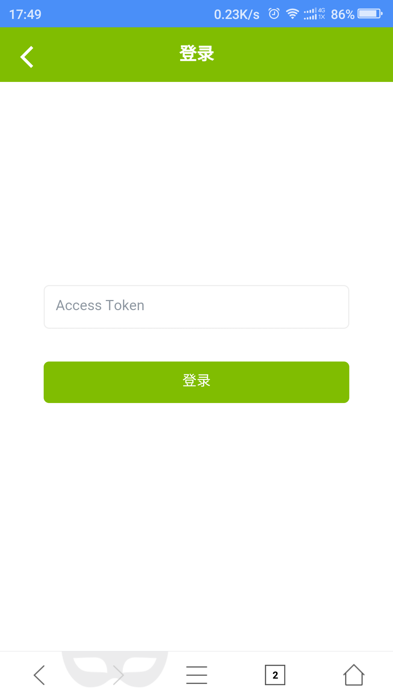
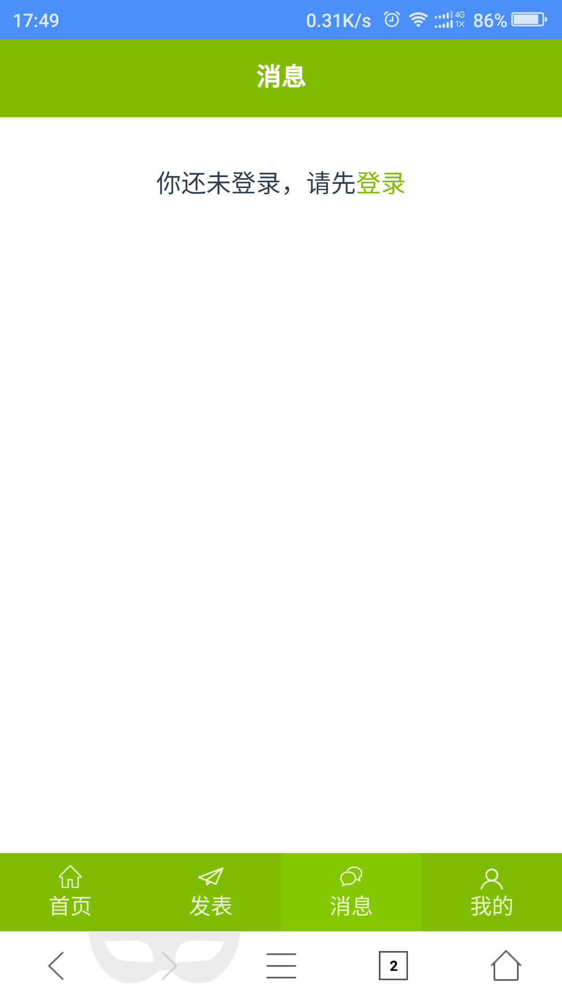

react-cnode
基于webpack + react + react-router + redux + less + flex.css + ES6 的React版cnode社区
下载
git clone https://github.com/1340641314/react-cnode.git
cd react-cnode
npm install (安装依赖模块)
npm install webpack -g (没有安装webpack的需要安装)
运行
npm run dev (开发版本访问：http://localhost:3000/)
npm run dist （发布生产版本）
功能
1.登录退出
2.列表分页，查看帖子
3.发帖，回复帖子
4.我的消息
5.个人中心
6.查看别人的资料
总结
1.UI是自己设计的，虽然我并不会PS这些工具。
2.使用了flex.css模块布局，最大的感觉就是在写css不需要考虑在css中如何写布局，大大的提高了我的效率。
3.在移动端中，列表数据达到上百条之后，性能仍然是不容乐乎，有待于进一步的优化。
4.ES6中的箭头函数和变量解构赋值，最大的感受在开发效率上。提高很多。
5.使用高阶组件封装获取数据的流程，让页面组件专注于页面渲染，避免了每个页面都需要写一次获取数据的流程，提高开发效率
6.redux听起来很美好，在实际操作的过程中，大大的复杂了创建一个页面的难度，最后只能将其封装起来，简化这个过程（其实我对redux不怎么理解）
7.为了还原页面状态，比如后退时的滚动条位置，还是花费了不少功夫
8.开发移动到应用，还是使用字体图标爽。
9.借助webpack可以生成离线缓存清单，px转rem，ES6编译成ES5，模块化开发，代码压缩混淆......
10.前端自动化，工程化，给前端的发展起到了很大的推动作用
状态树

小广告
深圳html5开发者社群：170761660
NodeJS前端分享群：133240225
截图






